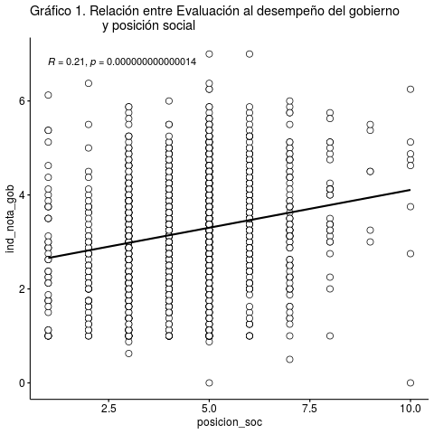
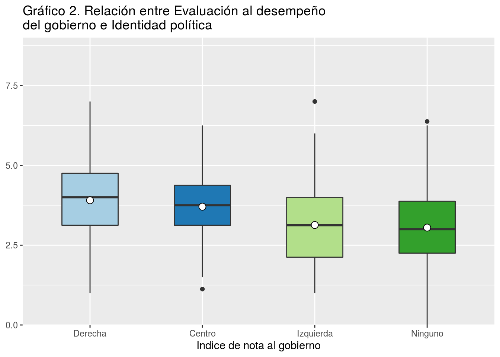
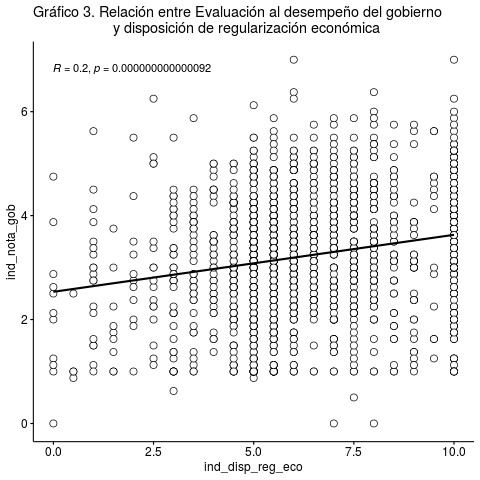
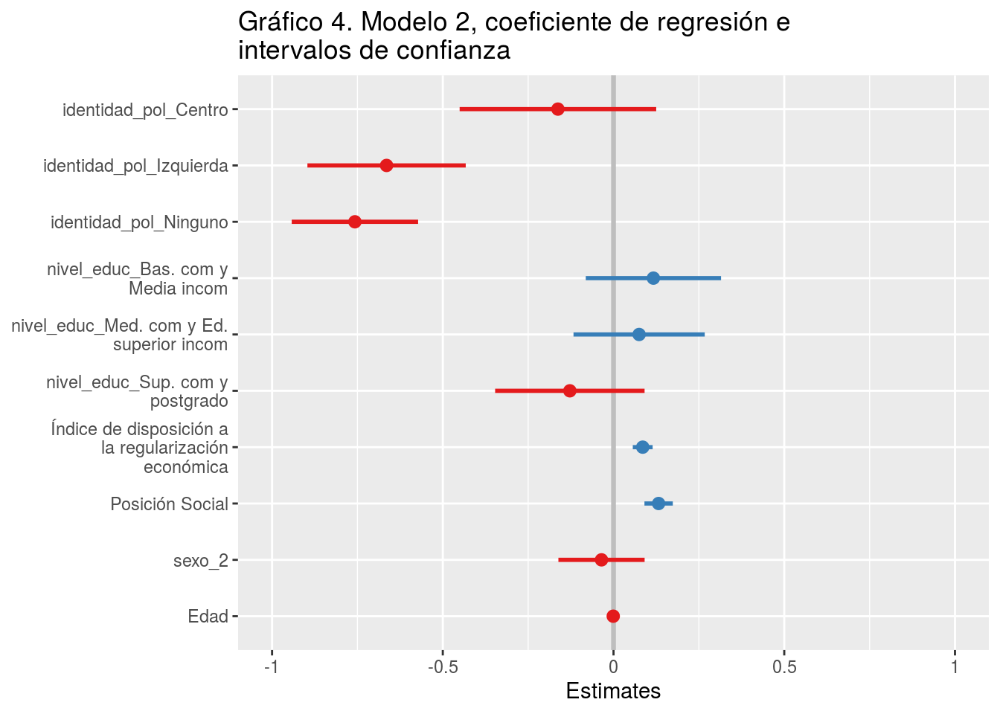

Informe 2. Estadística multivariada
Mayron Vasquez, Ignacio Núñez, Nicolás Tobar, Alexis Ibáñez y Dafne Jaime Vargas.
31/7/2020
1. Identificación:
Tema: La relación entre la sociedad civil y el gobierno de Piñera. Un análisis de regresión sobre el efecto de la posición social, disposición a la regulación económica e identidad política en la evaluación del desempeño político del gobierno.
Docente: Juan Castillo
Docente auxiliar: Valentina Andrade
Ayudante: Sebastián Cortínez Rojas
2. Resumen
Actualmente existe una amplia percepción negativa sobre el funcionamiento de la democracia en Chile por parte de la ciudadanía, la cual se ve expresada en cuestiones tales como la valoración que tienen los chilenos sobre las distintas instituciones que forman parte de la democracia, tales como el gobierno, los partidos políticos o los congresistas. Se han difundido diversas teorías sobre los fenómenos que han provocado la desconexión entre la sociedad civil y las instituciones democráticas, pero en general estos estudios abordan el problema desde una perspectiva de la confianza en la institución antes que en la posición social o la falta de identidad política de los chilenos.
El siguiente trabajo se propone aportar a esta discusión y analizar si existe relación entre la identidad política, la posición social y la disposición a la regulación económica de la ciudadanía con la evaluación política del gobierno. Es por esto que surge la pregunta ¿Cuál es la relación existente entre la percepción de la posición social, la disposición a la regularización económica y la identidad política con la evaluación del desempeño político del gobierno en Chile en mayo del año 2019?
Se recurrió a una prueba estadística de regresión múltiple, donde los resultados muestran que efectivamente existe una relación entre la posición social, la identidad política y el índice de disposición a la regularización económica con la evaluación del desempeño político del gobierno, conformando un modelo que permite explicar, en parte, este último. Todos estos predictores resultan ser significativos estadísticamente, es decir extrapolables a la población.
3. Introducción
Actualmente Chile vive una ruptura entre la institucionalidad política y la sociedad civil. Como bien es conocido, desde el punto de vista valórico, los chilenos se encuentran disociados de las instituciones y del sistema político (Garretón 2016). Según (CEP 2019), casi el 50% de los chilenos considera que nuestra democracia funciona mal o muy mal, y tanto el gobierno, los partidos políticos y congreso no superan el 5% de confianza como institución.
En ese sentido, esta crisis estaría dificultando el correcto funcionamiento de las instituciones políticas, por lo que resulta relevante estudiar este fenómeno. Según Garretón (2016), esta ruptura de la relación clásica entre política y sociedad estaría provocando que la sociedad pierda el sentido de la democracia como concepto básico de la organización moderna, lo que, sumado a una extrema individualización, estaría permitiendo que ciertos poderes fácticos sustituyan perversamente las instituciones.
En cuanto a antecedentes empíricos de la relación entre sociedad civil y democracia, Segovia et al. (2008) concluye, a partir de una regresión múltiple, que los juicios de confianza sobre las instituciones dependen principalmente de su capacidad y benevolencia. En adición, el estudio de Cereceda-Marambio and Torres-Solís (2017) señala que la satisfacción con la democracia proviene más por confianza en instituciones y economía que por variables de orden valórico.
Aún así, generalmente estos estudios se basan en el concepto de “confianza” para explicar el funcionamiento de las instituciones, pero como menciona Garretón (2016), la falta de confianza no indica cómo la institución funciona, pues termina personalizándolas, siendo un concepto impreciso para explicar la ruptura entre sociedad civil e instituciones. Es por eso que, como aporte para la disciplina sociológica, este informe propone estudiar esta ruptura desde conceptos alternativos a la confianza.
Se propone estudiar cómo la autopercepción de la posición social, la identidad política y la disposición a la regulación económica se relacionan con la evaluación que hacen los sujetos del gobierno de turno. Se espera que a medida que la identidad política y la disposición a la regulación económica se alejen a la del gobierno de turno (derecha y libre mercado), la evaluación de este último disminuya. Asimismo, se espera que la posición social no tenga un efecto relevante en la evaluación del gobierno.
En esta línea, estudios psicosociales afirman que a partir del ejercicio de comparación del individuo con quienes difieren de su posición social, puede emerger un sentimiento de justicia que permite que el orden imperante sea o no legítimo para él (Adam 1965; Guienne 2001), pero en Chile, si bien se observa cierto malestar los grupos populares, estos no han logrado reconocerse en tanto clase para establecer un proyecto político de su interés (Baño 2020). Esto se explica porque habrían ofertas de identidades políticas fragmentadas que no se agrupan según orientaciones compartidas de clase, lo que provoca que las instituciones políticas no sean capaces de establecer nexos entre un proyecto colectivo y la posición social (Garretón 2014; Ruiz 2015). Lo anterior provocaría que la evaluación política se vea influida por elementos cortoplacistas y de interés individual, como la disposición a la regulación económica.
Objetivos/hipótesis
Para guiar la investigación, se propone la siguiente pregunta:
¿Cuál es la relación existente entre la percepción de la posición social, disposición a la regularización económica y la identidad política con la evaluación del desempeño político del gobierno en Chile en mayo del año 2019?
Por lo tanto, el objetivo general de este trabajo es: Analizar la relación existente entre la percepción de la posición social, disposición a la regularización económica y la identidad política con la evaluación del desempeño político del gobierno en Chile en mayo del año 2019.
Respecto a la hipótesis, se propone que en cuanto disminuya la disposición de regularización económica (ligada a una estatista) y, en cuanto más se incline la identidad política al sector de izquierda, menor debería ser la evaluación del desempeño político del gobierno en Chile en mayo del año 2019. Asimismo, la percepción de la posición social no debería presentar mayor efecto en la variable dependiente.
En base a la anterior pregunta, se plantean los siguientes objetivos específicos:
Construir un índice, a partir de 9 variables de la base de datos, de la evaluación del desempeño político del gobierno en mayo del año 2019.
Caracterizar la percepción de la posición social, identidad política, disposición a la regulación económica y desempeño político del gobierno en mayo del año 2019.
Analizar la posición social, disposición a la regulación económica e identidad política en la evaluación del desempeño político del gobierno en mayo del año 2019.
Conocer cómo afectan la edad, el sexo y el nivel educacional en la relación de la posición social, disposición a la regulación económica e identidad política con la evaluación del desempeño político del gobierno en mayo del año 2019.
Metodología
3.1 Descripción de la base de datos
La base de datos a utilizar [CEP_base_proc] consiste en un fragmento de la base proporcionada por CEP (2019), la cual tiene como objetivo medir las actitudes y predisposiciones políticas, económicas y sociales de los habitantes de Chile. La base CEP_base_proc está compuesta por 1380 casos y 7 variables, y su universo son todos habitantes de Chile de más de 18 años, con excepción de la Isla de Pascua.
3.2 Variables
Para la realización de este ejercicio se tomaron en consideración las siguientes variables de la base de datos CEP_base_poc.
[posición_soc] = Nivel del grupo en el que se ubica el sujeto. Varía del 1 como nivel más bajo al 10 como nivel más alto.
[identidad_pol] = Posición política a la que se siente más cercano el sujeto. Se recodifica contemplando las categorías: Derecha, Centro, Izquierda, y Ninguno.
[ind_dips_reg_eco] = media entre las variables “perc_resp_ing” (percepción de la responsabilidad de ingresos) y “perc_resp_sus” (percepción de la responsabilidad de sustento). Varía del 1 al 10, donde 1 es una percepción de regularización económica estatista y 10 con libre mercado.
[ind_nota_gob] = Media entre la nota que se le asigna al gobierno por su gestión en delincuencia, pensiones, salud, educación, empleo, crecimiento económico, transporte público e inmigración. Varía del 1 al 7.
[sexo] = Si es hombre (1) o mujer (2).
[Edad] = Representa en años la edad de la/el entrevistado.
[nivel_educ] = Nivel de educación máximo alcanzado. Recodificado, contempla las categorías: educación básica incompleta, educación básica completa y media incompleta, educación media completa y educación superior incompleta, educación superior completa y estudios de posgrado.
Tabla 1. Descripción de las variables selectas
| No | Variable | Label | Stats / Values | Freqs (% of Valid) | Graph | Valid | Missing | ||||||||||||||||||||||||||||||||||||||||||||||||||||||||||||
|---|---|---|---|---|---|---|---|---|---|---|---|---|---|---|---|---|---|---|---|---|---|---|---|---|---|---|---|---|---|---|---|---|---|---|---|---|---|---|---|---|---|---|---|---|---|---|---|---|---|---|---|---|---|---|---|---|---|---|---|---|---|---|---|---|---|---|---|
| 1 | Indice_nota_gobierno [numeric] | Indice de nota al gobierno | Mean (sd) : 3.2 (1.2) min < med < max: 0 < 3.2 < 7 IQR (CV) : 1.7 (0.4) | 49 distinct values |  |
1380 (100%) | 0 (0%) | ||||||||||||||||||||||||||||||||||||||||||||||||||||||||||||
| 2 | Identidad_politica [factor] | 1. Derecha 2. Centro 3. Izquierda 4. Ninguno |
|
 |
1309 (94.86%) | 71 (5.14%) | |||||||||||||||||||||||||||||||||||||||||||||||||||||||||||||
| 3 | Indice_disposicion_regularización_economica [numeric] | Índice de disposición a la regularización económica | Mean (sd) : 6.2 (2.2) min < med < max: 0 < 6 < 10 IQR (CV) : 2.5 (0.3) | 21 distinct values |  |
1380 (100%) | 0 (0%) | ||||||||||||||||||||||||||||||||||||||||||||||||||||||||||||
| 4 | Posicion_social [numeric] | Posición Social | Mean (sd) : 4.5 (1.5) min < med < max: 1 < 5 < 10 IQR (CV) : 1 (0.3) |
|
 |
1367 (99.06%) | 13 (0.94%) | ||||||||||||||||||||||||||||||||||||||||||||||||||||||||||||
| 5 | Sexo [numeric] | Sexo | Min : 1 Mean : 1.6 Max : 2 |
|
 |
1380 (100%) | 0 (0%) | ||||||||||||||||||||||||||||||||||||||||||||||||||||||||||||
| 6 | Nivel_Educacional [factor] | 1. Básica incom 2. Bas. com y Media incom 3. Med. com y Ed. superior i 4. Sup. com y postgrado |
|
 |
1369 (99.2%) | 11 (0.8%) | |||||||||||||||||||||||||||||||||||||||||||||||||||||||||||||
| 7 | Edad [numeric] | Edad | Mean (sd) : 50 (18.1) min < med < max: 18 < 50 < 96 IQR (CV) : 29 (0.4) | 76 distinct values |  |
1380 (100%) | 0 (0%) |
Generated by summarytools 0.9.6 (R version 4.0.2)
2020-08-12
En la Tabla 1 se observa la distribución de las variables. Principalmente se observa que las variables selectas varían su cantidad de casos entre 1309 y 1380. La variable dependiente toma 49 valores y su distribución se asemeja a una normal, al igual que la posición social y la disposición a la regulación económica, y al contrario, la distribución de identidad política se asemeja a la de chi cuadrado.
3.3 Método
Se efectuará un estudio cuantitativo estadístico. En primer lugar, se propone un análisis univariado de las variables independientes y de la dependiente. Para el análisis bivariado se elaborará una correlación de las variables de interés, en conjunto a gráficos de caja. Tercero, se llevará a cabo un modelo de regresión múltiple entre las 4 variables: la identidad política, posición social, disposición a la regulación económica (independientes), y el índice de nota al desempeño del gobierno (dependiente). Finalmente se propone analizar el ajuste del modelo y su significancia estadística.
Se eligió esta metodología porque permite corroborar si las variables independientes son capaces de explicar el comportamiento de la nota hacia el gobierno, y por lo tanto predecir su variación, controlando por sexo, nivel educacional y edad. Asimismo, se propone observar su ajuste para definir cuánto el modelo es capaz de explicar de la variable dependiente, como también se indica la significancia estadística para saber si los resultados son extrapolables a la población objetivo.
4. Análisis de datos
4.1 Análisis Univariado
En la tabla 1, la variable “Identidad política” tiene una alta concentración de casos en el número 4 (“ninguna”), correspondiente al 62% de los casos, indicando que las personas no suelen identificarse con algún sector político. La variable “Índice de nota al gobierno” tiene una media y mediana de 3.2, y una dispersión de 1,2 lo que indica que los datos tienden a concentrarse cerca de valores medios-bajos. Por otra parte, el índice de “disposición de regularización económica” tiene una mediana de 6, una media de 6,2, y una desviación estándar de 2,2, mostrando una pequeña concentración de la curva a la derecha. Sobre la variable de posición social, también existe una concentración en los casos medios-bajos, el nivel 5 con un 33.7%, seguido por las opciones de 4 y 3 con 22,5% y 15,9% respectivamente.
Además, la variable sexo nos arroja que más de la mitad de la muestra son mujeres (62%). Por otro lado la variable nivel educacional nos muestra que al menos un 40,7% tiene educación media incompleta y de ese porcentaje, la mitad posee al menos educación básica incompleta. Finalmente, la edad evidencia una mediana de 50, es decir al menos un 50% tiene entre 18 y 50 años.
4.2 Análisis Bivariado
El gráfico 1 muestra la relación de la nota al gobierno con la variable posición social. Se observa una correlación positiva entre ambas con un nivel de efecto de 0,21 (p<0.001), que resulta mediano-pequeño para ciencias sociales (Cohen 1988).

Fuente: Elaboración propia en base a CEP n°83 2019
El gráfico 2 muestra la relación de la variable predictora categórica (identidad política) con la evaluación al desempeño del gobierno. Se observa; en primer lugar, que en la categoría “Derecha”, un 50% califica entre un 3 y un 5 (rango intercuartílico aproximado) al gobierno. En segundo lugar, la dispersión de los evaluadores de “Centro” indica que un 50% tiende a calificar, en promedio, menos en relación a quienes se identifican de derecha. En tercer lugar, quienes se identifican en la “Izquierda”, presentando el rango intercuartílico más bajo (de 2 a 4 aproximadamente), pero con mayor dispersión, aunque sus valores extremos son más cercanos a la mediana que los demás. Finalmente, quienes se identifican con “Ninguno”, poseen un rango intercuartílico menos disperso que la izquierda, pero poseen una dispersión mayor en sus valores mínimos y máximos en comparación a las demás categorías.

Fuente: Elaboración propia en base a CEP n°83 2019
El gráfico 3 muestra la correlación de la nota al gobierno y la disposición a la regularización. Se observa un nivel de efecto positivo de 0,2, que es mediano-pequeño para ciencias sociales (Cohen 1988).

Fuente: Elaboración propia en base a CEP n°83 2019
4.3 Modelo de Regresión
En el presente trabajo se estiman dos modelos: el primero estimado en relación al objetivo principal y el segundo se realiza con variables de control.
Formula teórica \[ \operatorname{ind\_nota\_gob} = \alpha + \beta_{1}(\operatorname{identidad\_pol\_Centro}) + \beta_{2}(\operatorname{identidad\_pol\_Izquierda}) + \beta_{3}(\operatorname{identidad\_pol\_Ninguno}) + \beta_{4}(\operatorname{ind\_disp\_reg\_eco}) + \beta_{5}(\operatorname{posicion\_soc}) + \epsilon \]\[ \operatorname{ind\_nota\_gob} = \alpha + \beta_{1}(\operatorname{identidad\_pol\_Centro}) + \beta_{2}(\operatorname{identidad\_pol\_Izquierda}) + \beta_{3}(\operatorname{identidad\_pol\_Ninguno}) + \beta_{4}(\operatorname{`nivel\_educ\_Bas.\ com\ y\ Media\ incom`}) + \beta_{5}(\operatorname{`nivel\_educ\_Med.\ com\ y\ Ed.\ superior\ incom`}) + \beta_{6}(\operatorname{`nivel\_educ\_Sup.\ com\ y\ postgrado`}) + \beta_{7}(\operatorname{ind\_disp\_reg\_eco}) + \beta_{8}(\operatorname{posicion\_soc}) + \beta_{9}(\operatorname{sexo\_2}) + \beta_{10}(\operatorname{Edad}) + \epsilon \]
Formula de los modelos \[ \operatorname{ind\_nota\_gob} = 2.7 - 0.14(\operatorname{identidad\_pol\_Centro}) - 0.64(\operatorname{identidad\_pol\_Izquierda}) - 0.72(\operatorname{identidad\_pol\_Ninguno}) + 0.08(\operatorname{ind\_disp\_reg\_eco}) + 0.13(\operatorname{posicion\_soc}) + \epsilon \]\[ \operatorname{ind\_nota\_gob} = 2.73 - 0.16(\operatorname{identidad\_pol\_Centro}) - 0.66(\operatorname{identidad\_pol\_Izquierda}) - 0.76(\operatorname{identidad\_pol\_Ninguno}) + 0.12(\operatorname{`nivel\_educ\_Bas.\ com\ y\ Media\ incom`}) + 0.07(\operatorname{`nivel\_educ\_Med.\ com\ y\ Ed.\ superior\ incom`}) - 0.13(\operatorname{`nivel\_educ\_Sup.\ com\ y\ postgrado`}) + 0.09(\operatorname{ind\_disp\_reg\_eco}) + 0.13(\operatorname{posicion\_soc}) - 0.04(\operatorname{sexo\_2}) + 0(\operatorname{Edad}) + \epsilon \]
La tabla 2, nos muestra dos modelos, donde los coeficientes señalan la relación existente de las variables independientes y el índice creado de evaluación al gobierno. Así en el modelo 1 la nota en promedio al gobierno es de 2.698
Respecto al Modelo 1, la variable de identidad política, con la categoría Centro califica en promedio 0.136 puntos menos al gobierno en comparación a la categoría Derecha, pero no logra predecir significativamente el puntaje en el índice [b=-0.136, SE=0.147, p>0.05] ceteris paribus. Además, la categoría Izquierda califica en promedio 0.635 puntos menos al gobierno en comparación a la Derecha [b= -0.635, SE=0.118, p<0.001] ceteris paribus. Finalmente, se puede evidenciar que la categoría Ninguno califica en promedio 0.72 puntos menos al gobierno en comparación a la Derecha, ceteris paribus [b=-0.72, SE=0.093, p<0.001] los coeficientes de las dos últimas categorías (Izquierda y Ninguno) son significativos con un 99.9% de confianza respecto la evaluación promedio al gobierno.
Respecto al índice de disposición política a la regularización económica, se puede afirmar que predice significativamente la nota promedio al gobierno [b=0.084, SE=0.015, p<0.001] ceteris paribus, un aumento de cada punto en la disposición aumentaría un 0.084 puntos en promedio en la evaluación al gobierno.
Finalmente, respecto a la posición social se evidencia que predice significativamente la nota promedio al gobierno [b=0.128, SE=0.020, p<0.001] ceteris paribus, es decir a cada punto más de posición social la calificación aumenta 0.128 en promedio.
En el modelo 2, añadiendo las variables de control, el intercepto (nota al gobierno) en promedio aumenta (modelo 1=2.698, modelo 2=2.733), pero mantiene su significancia (p<0.001); además, se evidencia un aumento leve de los betas asociados a la posición política de Centro (-0.136 a -0.163 ), Izquierda (-0.635 a -0.665) y Ninguno (-0.720 a -0.757), manteniendo su significancia (o falta de ésta en el caso de la categoría Centro); finalmente, aumenta el índice de disposición a la regularización económica (0.084 a 0.085) y la posición social (0.128 a 0.132) manteniendo su significancia.
Respecto a la variable de control; nivel educacional, se puede reportar que el tener educación básica completa o media incompleta califica en promedio 0.117 mejor al gobierno en comparación a no tener educación, ceteris paribus [b=0.11, SE=0.101, p>0.05]; sobre su segunda categoría se reporta que el tener educación media completa o superior incompleta significa un 0.075 de mejor nota al gobierno en comparación al no tener estudios [b=0.075, SE=0.098, p>0.05], finalmente respecto a tener educación superior completa o postgrado significa un 0.128 menos de calificación promedio al gobierno [b=-0.128, SE=0.112, p>0.05] ceteris paribus, sin embargo ni uno de los beta’s de estas categorías es estadísticamente significativo (p>0.05)
Sobre la segunda variable, se reporta que el ser mujer tiene en promedio 0.035 puntaje menos en promedio a la nota del gobierno en comparación a los hombres, ceteris paribus pero esta no resulta ser significativa [b=-0.35, SE=0.064, p>0.05]
Finalmente, respecto al reporte de la variable edad se puede interpretar que por cada año adicional se califica 0.001 menos en promedio al gobierno, ceteris paribus, pero este resultado no es significativo [b=-0.001 SE=0.002, p>0.05]
| Modelo 1 | Modelo 2 | |||
|---|---|---|---|---|
| Predictores | β | std. Error | β | std. Error |
| (Intercept) | 2.698 *** | 0.160 | 2.733 *** | 0.218 |
| identidad_pol_Centro | -0.136 | 0.147 | -0.163 | 0.147 |
| identidad_pol_Izquierda | -0.635 *** | 0.118 | -0.665 *** | 0.118 |
| identidad_pol_Ninguno | -0.720 *** | 0.093 | -0.757 *** | 0.094 |
|
Índice de disposición a la regularización económica |
0.084 *** | 0.015 | 0.085 *** | 0.015 |
| Posición Social | 0.128 *** | 0.020 | 0.132 *** | 0.021 |
|
nivel_educ_Bas. com y Media incom |
0.117 | 0.101 | ||
|
nivel_educ_Med. com y Ed. superior incom |
0.075 | 0.098 | ||
|
nivel_educ_Sup. com y postgrado |
-0.128 | 0.112 | ||
| sexo_2 | -0.035 | 0.064 | ||
| Edad | -0.001 | 0.002 | ||
| Observations | 1302 | 1292 | ||
| R2 / R2 adjusted | 0.125 / 0.122 | 0.133 / 0.126 | ||
|
||||
Fuente: Elaboración propia en base a CEP n°83 2019
El gráfico 4 evidencia que las variables identidad política de centro, las categorías de nivel educacional, sexo y edad pasan por el cero, y por ende, hay un 95% de probabilidad de que los intervalos de confianza puedan alcanzar un valor igual a 0 y que no existan diferencias, por ello no resultan significativas. No así con las categorías de identidad política izquierda y ninguno, o con el índice de disposición a la regularización social y la posición social, que muestran con un 99,9% de confianza que son distintas de 0.

Fuente: Elaboración propia en base a CEP n°83 2019
4.4 Ajuste global del modelo
Respecto al ajuste del modelo 1 (ver tabla 2), se puede afirmar que el modelo tiene una capacidad de explicar un 12.2% de la variación de la nota del gobierno a través de las variables identidad política, posición social y disposición en la regularización económica. En el modelo 2, la variación del R cuadrado ajustado es levemente mayor que en el modelo 1 (12,6%), lo que puede asociarse a la falta de significancia estadística de las variables de control.
5. Conclusión
En conclusión, según los resultados, se observa que la disposición a la regulación económica no tiene un efecto relevante en la variación de la nota que los entrevistados le asignan al desempeño político del gobierno. Por el contrario, se nota que la identidad política, en sus categorías de “izquierda” y “ninguna”, impactan negativamente con una alta magnitud en la nota asignada. Sobre la posición política, su efecto es medianamente positivo. Además, se observa que estos resultados, al ser controlados por sexo, nivel educacional y edad, se mantienen similares a su estado inicial.
De las tres variables dependientes escogidas, todas resultaron ser estadísticamente significativas, con un 99.9% en relación a la nota del gobierno, lo que arroja altas probabilidades de que estas diferencias ocurren dentro de los habitantes de Chile mayores de 18 años, permitiendo rechazar la hipótesis nula. Sin embargo, las variables escogidas de control, no lograron significancia estadística, lo cual limita el análisis de control.
Dicho a lo anterior, respecto a nuestra hipótesis formulada (H1), se puede afirmar que si bien la posición social presenta un impacto medianamente bajo, no termina por ser una variable irrelevante para la explicación de la nota asignada al gobierno. Asimismo, aunque mientras la disposición a la regulación económica se acerca a la tendencia del gobierno de libre mercado, la nota aumenta, la magnitud de su efecto resulta bastante menor a lo esperado. Por último, a diferencia de las otras dos variables, se cumple lo esperado en la identidad política, aunque cabe destacar que la categoría “ninguno” tiende a notas más bajas que “izquierda”, lo cual podría estar relacionado con el malestar producto de la desafección política, cuestión que podría se profundizada en un próximo estudio.
Referencias Bibliográficas
Adam, J. 1965. “Inequity in Social Exchange. In Advances in Experimental Social Psychology” 2: 267–99.
Baño. 2020. “Revista Análisis Del Año 2019.” Cuento Corto: ¡Boooooom!..
CEP. 2019. Estudio Nacional de Opinión Pública N°83.
Cereceda-Marambio, K, and A Torres-Solís. 2017. “Satisfacción Con La Democracia En Chile: De Lo Normativo a Lo Valorativo.” Revista de Sociología 32: pp. 32–49. https://doi.org/10.5354/0719-529X.2017.47884.
Cohen, J. 1988. Statistical Power Analysis for the Behavioral Sciences. 2da ed. USA: LEA. https://books.google.cl/books?id=2v9zDAsLvA0C&pg=PP1&redir_esc=y#v=onepage&q&f=false.
Garretón, M. 2014. Las Ciencias Sociales En La Trama de Chile Y América Latina. Santiago: LOM ediciones.
———. 2016. La Gran Ruptura: Institucionalidad Política Y Actores Sociales En El Chile Del Siglo XXI. Santiago: LOM ediciones.
Guienne, V. 2001. “Du Sentiment d’injustice à La Justice Sociale.” 131–42.
Ruiz, C. 2015. Desigualdad Y Cambios En La Estructura Social, Primera Sesión Del Taller de Movimientos Sociales Y Partidos Políticos. Fundación Chile 21 - Fundación Fiedrich Ebert.
Segovia, C, A Haye, R González, J Manzi, and H Carvacho. 2008. “Confianza En Instituciones Políticas En Chile: Un Modelo de Los Componentes Centrales de Juicios de Confianza.” Revista de Ciencia Política 28. https://doi.org/10.4067/S0718-090X2008000200002.